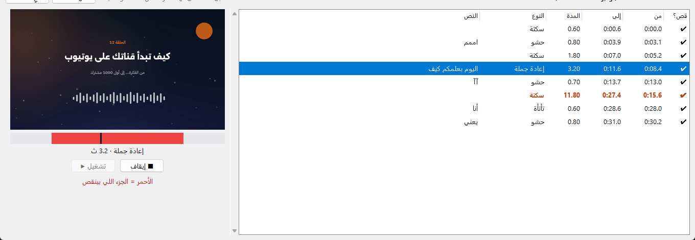

صوّرت؟
Cutvo يقص لك الباقي.
يشيل السكتات و«اممم» والجمل اللي تعيدها من فيديوهاتك تلقائياً — وأنت تشوف كل قصة قبل ما تصدّر.
3 فيديوهات مجاناً · بدون تسجيل ولا بطاقة · ويندوز 10 و 11
وش يشيل من فيديوك؟
كل الأشياء اللي تاخذ وقتك في المونتاج… يلقاها لك بنفسه.
السكتات الطويلة
الفراغ بين كلامك، وبداية ونهاية التسجيل.
كلمات الحشو
«اممم»، «آآ»، «uh» — وتقدر تضيف كلماتك مثل «يعني».
الجمل المعادة
لما تبدأ الجملة وتعيدها، يخلي آخر محاولة بس.
التأتأة
«أنا أنا…» تنشال وتبقى الكلمة مرة وحدة.
3 خطوات بس
بدون إعدادات معقدة ولا خبرة مونتاج.
اختر الفيديو
أي فيديو أو ملف صوت، بأي لغة — يتعرف على اللغة لحاله.
حلّل
تطلع لك قائمة بكل سكتة وحشو وتكرار، مع وقته ومدته.
راجع وصدّر
فيديو جاهز، وترجمة SRT، وملف XML تفتحه في بريمير وريزولف.
شوف كل قصة قبل ما تصدّر جديد
اضغط على أي قصة في القائمة: تطلع لك صورة اللحظة، وتقدر تشغّلها بالصوت. الجزء الأحمر هو اللي بينقص.
- تشغيل من ثانية قبل القصة لثانية بعدها
- السكتات الطويلة تتلوّن عشان تنتبه لها
- دبل كلك على أي قصة وتلغيها

اسمع الفرق بنفسك
تسجيل فيه سكتات وحشو وجملة معادة — وبعد ما قصّه Cutvo.
يشتغل مع كل شي
أكثر من 20 لغة
أي كرت شاشة
يختار الأسرع لجهازك تلقائياً.
أي برنامج مونتاج
فيديو MP4 جاهز، أو قصّات XML و EDL تعدّلها بنفسك.
فيديوهاتك ما تطلع من جهازك
كل التحليل والقص يصير على كمبيوترك — ما نرفع شي.
يشتغل بدون نت
بعد أول تشغيل، ما تحتاج إنترنت أبداً.
بدون اشتراك شهري
تشتريه مرة وحدة، ويبقى لك.
جرّب، وبعدين اشتري
كل نسخة تتفعّل على جهاز واحد بمفتاح خاص فيك.
حمّل وجرّب مجاناً
صدّر 3 فيديوهات ببلاش، والثالث يطلع بعلامة مائية. ملف تثبيت واحد (106 ميجا) يختار المناسب لكرتك.
انسخ كود جهازك
يطلع لك في شاشة التفعيل أول ما تفتح البرنامج.
أرسله لنا
على hello@cutvo.app أو @getcutvo مع الدفع.
فعّل
يوصلك مفتاح التفعيل، تلصقه وتبدأ.
شراء مرة وحدة، بدون اشتراك
يشمل كل التحديثات الصغيرة مجاناً. للدفع، راسلنا وبنرد عليك بسرعة.
✔ جرّبه مجاناً على جهازك قبل ما تدفع — كيف؟
✔ ضمان استرجاع خلال 7 أيام إذا البرنامج ما اشتغل على جهازك — التفاصيل
| خدمات إضافية | السعر |
|---|---|
| التحديثات (1.1, 1.2 …) | مجاناً |
| مساعدة في التثبيت والتشغيل | مجاناً |
| نقل الترخيص لجهاز جديد — أول مرتين في السنة | مجاناً |
| نقل الترخيص — المرة الثالثة وما بعدها في نفس السنة | 25 ريال |
| ترخيص لجهاز ثاني لنفس الشخص (مثلاً لابتوب + كمبيوتر) | 99 ريال |
متطلبات الجهاز
| الحد الأدنى | المُوصى به | |
|---|---|---|
| النظام | Windows 10 (64-bit) | Windows 11 |
| كرت الشاشة | AMD أو Intel أو NVIDIA | NVIDIA GeForce RTX |
| الذاكرة RAM | 8 GB | 16 GB |
| المساحة | 5 GB | 8 GB |
| الإنترنت | وقت التثبيت وأول تحليل بس | |
أسئلة شائعة
فيه تجربة مجانية؟
إيه. حمّل البرنامج وثبّته، وتقدر تستخدمه بدون مفتاح:
- تحلّل وتشوف القصات وتعاينها بدون حد.
- تصدّر 3 فيديوهات مجاناً — الأول والثاني كاملين، والثالث يطلع بعلامة Cutvo المائية.
- إذا صدّرت نفس الفيديو مرة ثانية ما ينحسب.
- إذا عجبك، أرسل لنا كود جهازك من زر «فعّل البرنامج» ونرسل لك المفتاح.
ويندوز يقول «Windows protected your PC»، هل البرنامج آمن؟
إيه. الرسالة تطلع لأن البرنامج جديد. اضغط «More info» ثم «Run anyway».
هل يقص لقطات أحتاجها؟
Cutvo يقترح القصات بس — وأنت تشوف كل قصة بالمعاينة، وتلغي أي وحدة ما تبيها قبل التصدير.
يشتغل على ماك؟
حالياً ويندوز 10 و 11 فقط.
غيّرت جهازي أو فرمت، وش أسوي؟
أرسل لنا كود الجهاز الجديد، ونعطيك مفتاح له. وأول ما يتفعّل الجهاز الجديد، ينلغي المفتاح القديم تلقائياً ويوقف البرنامج على الجهاز القديم أول ما يتصل بالإنترنت — يعني الترخيص يشتغل على جهاز واحد بس، وما ينفع تشغيله على جهازين. النقل مجاني مرتين في السنة، وبعدها 25 ريال للمرة.
هل يرفع فيديوهاتي لأي مكان؟
لا. كل شي يصير على جهازك. الإنترنت يحتاجه البرنامج بس أول مرة عشان ينزّل نموذج التعرّف على الكلام.
أقدر أكمل المونتاج في برنامج المونتاج اللي أستخدمه؟
أكيد. Cutvo يصدّر لك:
- فيديو MP4 مقصوص + ترجمة SRT — تفتحه في أي برنامج مونتاج: CapCut، Premiere Pro، DaVinci Resolve، Final Cut Pro، Filmora، Vegas، وتطبيقات الجوال مثل VN و InShot.
- ملف XML — تفتحه في Premiere Pro و DaVinci Resolve، ويطلع لك الفيديو الأصلي والقصّات منفصلة على التايملاين، وتقدر ترجع أي قصة.
- ملف EDL — للبرامج اللي تقبل قوائم القص، مثل DaVinci Resolve و Avid و Vegas.
وش سياسة الاسترجاع؟
إذا البرنامج ما اشتغل على جهازك، راسلنا على hello@cutvo.app خلال 7 أيام من الشراء، وبنحاول نحل المشكلة معك أول. وإذا ما انحلت، نرجع لك المبلغ كامل.
- مع الاسترجاع ينلغي مفتاح التفعيل، ويوقف البرنامج على جهازك.
- ما يشمل الاسترجاع تغيير الرأي بعد ما يشتغل البرنامج، ولا الطلبات بعد 7 أيام.
- قبل الشراء، جرّب البرنامج مجاناً على جهازك وتأكد إنه يشتغل.